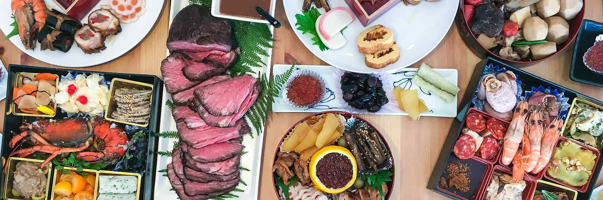

Cherry Blossoms
The cherry blossom (桜, sakura) is Japan's unofficial national flower. It has been celebrated for many centuries and holds a prominent position in Japanese culture. There are dozens of cherry tree varieties in Japan, most of which bloom for just a few days in spring. The seasonal spectacle is celebrated with hanami (cherry blossom viewing) parties under the trees.

Japanese Cuisine
Japanese cuisine (和食, washoku) offers an abundance of gastronomical delights with a boundless variety of regional and seasonal dishes. Restaurants in Japan range from mobile food stands to centuries old ryotei, atmospheric drinking places, seasonally erected terraces over rivers and inexpensive chain shops. Many restaurants are specialized in a single type of dish, while others offer a variety of dishes.